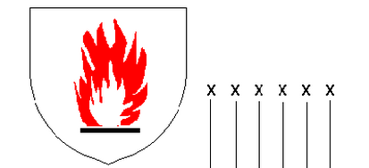

EN407-2004
该标准说明防热和耐火手套的性能标准等级和标识，在以下一种或几种因素的作用下，可以保护手不受伤害：热接触，火焰，热传导，辐射热，小点熔化金属的溅射或大点熔化金属的溅射。试验得出性能的标准而不是防护的标准。
机械要求:手套在耐磨损和抗撕裂上必须符合EN388的标准中的1级以上。
性能的分级：
耐火:在火源熄灭并移开后，材料持续燃烧的时间。
手套等级 |
火焰接触时间 |
预热时间 |
1 |
≤20s |
无要求 |
2 |
≤10s |
≤120s |
3 |
≤3s |
≤25s |
4 |
≤2s |
≤5s |
耐热接触:100-500摄氏度之间的热接触，戴穿手套的人不会有痛感的最高温度（接触时间至少15秒）
手套等级 |
接触温度 |
1 |
100℃ |
2 |
250℃ |
3 |
350℃ |
4 |
500℃ |
耐对流热传递:手套阻止火苗热量传递的持续时间
手套等级 |
热传递系数HTI |
1 |
≥4 |
2 |
≥7 |
3 |
≥10 |
4 |
≥18 |
耐热辐射:导致手套升高到指定温度所需要的时间
手套等级 |
传热等级t3 |
1 |
≥5 |
2 |
≥30 |
3 |
≥90 |
4 |
≥150 |
耐小点熔化金属的溅射:导致手套升高到某一温度所需要的喷射的份量
手套等级 |
颗粒数量 |
1 |
≥5 |
2 |
≥15 |
3 |
≥25 |
4 |
≥35 |
耐大点熔化金属的溅射（1to4）:导致手套损坏所需要的份量
手套等级 |
铁水克重 |
1 |
30g |
2 |
60g |
3 |
120g |
4 |
200g |

以上X从左往右依次代表相应等级：耐火；耐热接触；耐对流热传递；耐热辐射；耐小点熔化金属的溅射；耐大点熔化金属的溅射